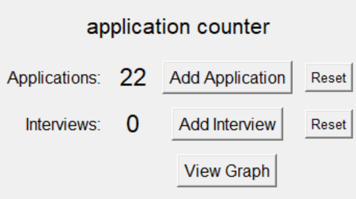

Application Tracking Tool
I have been applying to a LOT of internships so I wanted a way to track my progress. I created a simple tool with Python to do so. You can also click the graph button to display your progress in a flow chart.
Python,tkinter
I learned some about json storage, I had worked with json data before but this really solidified my knowledge.